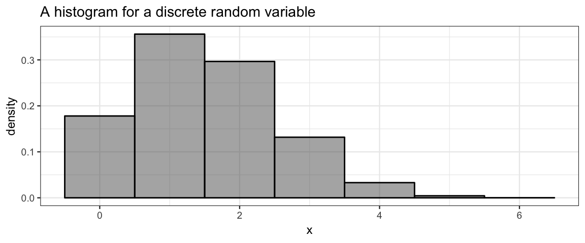
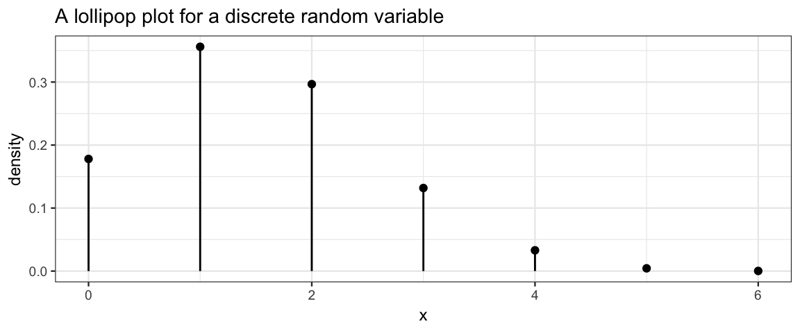
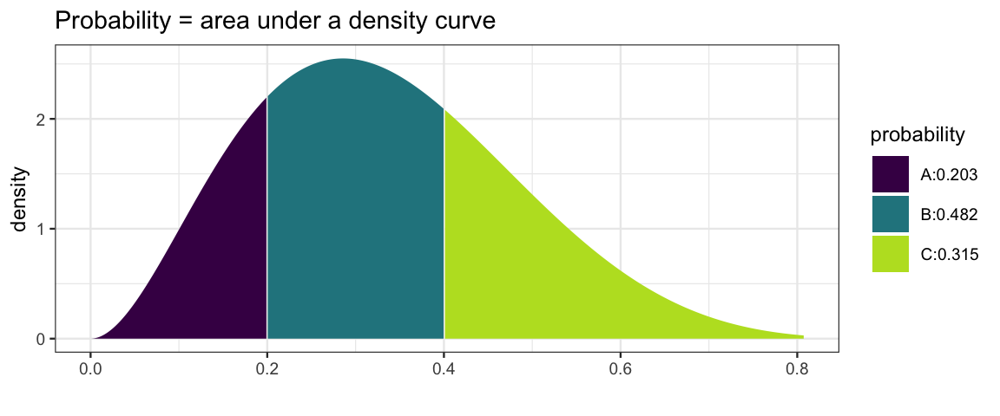
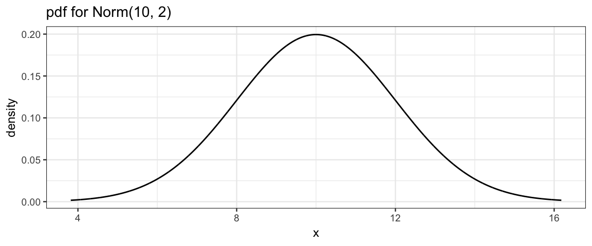
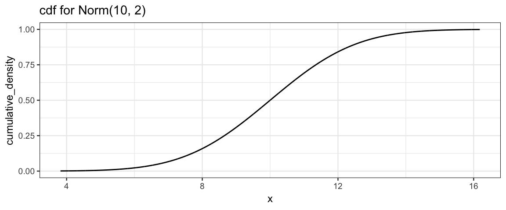
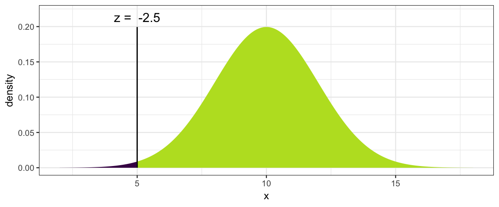
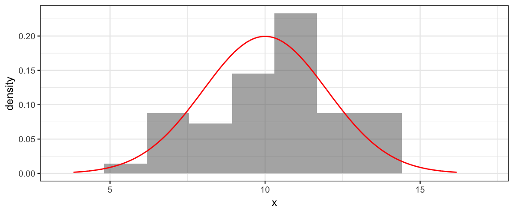
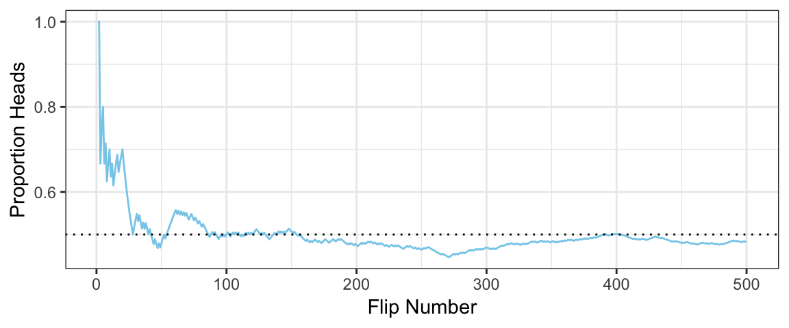

4 Probability
knitr::opts_chunk$set(
fig.width = 6,
fig.height = 2.5
)
library(ggformula)
library(dplyr)##
## Attaching package: 'dplyr'## The following objects are masked from 'package:stats':
##
## filter, lag## The following objects are masked from 'package:base':
##
## intersect, setdiff, setequal, unionlibrary(mosaic)## Loading required package: lattice## Loading required package: mosaicData## Loading required package: Matrix##
## The 'mosaic' package masks several functions from core packages in order to add
## additional features. The original behavior of these functions should not be affected by this.
##
## Note: If you use the Matrix package, be sure to load it BEFORE loading mosaic.##
## Attaching package: 'mosaic'## The following object is masked from 'package:Matrix':
##
## mean## The following objects are masked from 'package:dplyr':
##
## count, do, tally## The following object is masked from 'package:ggplot2':
##
## stat## The following objects are masked from 'package:stats':
##
## binom.test, cor, cor.test, cov, fivenum, IQR, median,
## prop.test, quantile, sd, t.test, var## The following objects are masked from 'package:base':
##
## max, mean, min, prod, range, sample, sumtheme_set(theme_bw())4.1 Some Terminology
Probability is about quantifying the relative chances of various possible outcomes of a random process.
As a very simple example (used to illustrate the terminology below), considering rolling a single 6-sided die.
sample space: The set of all possible outcomess of a random process. [{1, 2, 3, 4, 5, 6}]
event: a set of outcomes (subset of sample space) [E = {2, 4, 6} is the event that we obtain an even number]
probability: a number between 0 and 1 assigned to an event (really a function that assigns numbers to each event). We write this P(E). [P(E) = 1/2 where E = {1, 2, 3}]
random variable: a random process that produces a number. [So rolling a die can be considered a random variable.]
probability distribution: a description of all possible outcomes and their probabilities. For rolling a die we might do this with a table like this:
| 1 | 2 | 3 | 4 | 5 | 6 |
|---|---|---|---|---|---|
| 1/6 | 1/6 | 1/6 | 1/6 | 1/6 | 1/6 |
support (of a random variable): the set of possible values of a random variable. This is very similar to the sample space.
probabilty mass function (pmf): a fuction (often denoted with \(p\) or \(f\)) that takes possible values of a discrete random variable as input and returns the probability of that outcome.
If \(S\) is the support of the random variable, then \[ \sum_{x \in S} p(x) = 1 \] and any function with this property is a pmf.
Probabilites of events are obtained by adding the probabilities of all outcomes in the event:
\[ \operatorname{Prob}(E) = \sum_{x \in E} p(x) \] * pmfs can be represented in a table (like the one above) or graphically with a probability histogram or lollipop plot like the ones below. [These are not for the 6-sided die, as we can tell because the probabilities are not the same for each input; the die rolling exmaple would make very boring plots.]

- Histograms are generally presented on the density scale so the total area of the histogram is 1. (In this example, the bin widths are 1, so this is the same as being on the probability scale.)
probabilty density function (pdf): a function (often denoted with \(p\) or \(f\)) that takes the possible values of continuous random variable as input and returns the probability density.
- If \(S\) is the support of the random variable, then 1 \[ \int_{x \in S} f(x) \; dx = 1 \] and any function with this property is a pmf.
- Probabilities are obtained by integrating (visualized by the area under the density curve):
\[ \operatorname{Prob}(a \le X \le b) = \int_a^b f(x) \; dx \]

kernel function: If \(\int_{x \in S} f(x) \; dx = k\) for some real number \(k\), then \(f\) is a kernel function. We can obtain the pdf from the kernel by dividing by \(k\).
cumulative distribution function (cdf): a function (often denoted with a capital \(F\)) that takes a possible value of a random variable as input and returns the probabilty of obtaining a value less than or equal to the input: \[ F_X(x) = \operatorname{Prob}(X \le x) \] cdfs can be defined for both discrete and continuous random variables.
a family of distributions: is a collection of distributions which share common features but are distinguished by different parameter values. For example, we could have the family of distributions of fair dice random variables. The parameter would tell us how many sides the die has. Statisticians call this family the discrte uniform distributions because all the probabilities are equal (1/6 for 6-sided die, 1/10 for a \(D_10\), etc.).
We will get to know several important families of distributions, among them the binomial, beta, normal, and t families will be especially useful. You may already be familiar with some or all of these. We will also use distributions that have no name and are only described by a pmf or pdf, or perhaps only by a large number of random samples from which we attempt to estimate the pmf or pdf.
4.2 Distributions in R
pmfs, pdfs, and cdfs are available in R for many important families of distributions. You just need to know a few things:
- each family has a standard abbreviation in R
- pmf and pdf functions begin with the letter
dfollowed by the family abbreviation - cdf functions begin with the letter
pfollwed by the family abbreviation - the inverse of the cdf function is called a quantile function,
it starts with the letter
q - functions beginning with
rcan generate random samples from a distribution - help for any of these functions will tell you what R calls the parameters of the family.
gf_dist()can be used to make various plots of distributions.
4.2.1 Example: Normal distributions
As an exmple, let’s look the family of normal distributions. If you type
dnorm( and then hit TAB or if you type args(dnorm) you can see the arguments
for this function.
args(dnorm)## function (x, mean = 0, sd = 1, log = FALSE)
## NULLFrom this we see that the parameters are called mean and sd and have
default value of 0 and 1. These values will be used if we don’t specify
somethng else.
As with many of the pmf and pdf functions,
there is also an option to get back the log of the
pmf or pdf by setting log = TRUE. This turns out to be computationally much
more efficient in many contexts, as we will see.
Let’s begin with some pictures of a normal distribution with mean 10 and standard deviation 1:
gf_dist("norm", mean = 10, sd = 2, title = "pdf for Norm(10, 2)")
gf_dist("norm", mean = 10, sd = 2, kind = "cdf", title = "cdf for Norm(10, 2)")
Now some exercises. Assume \(X \sim {\sf Norm}(10, 2)\).
What is \(\operatorname{Prob}(X \le 5)\)?
We can see by inspection that it is less that 0.5.
pnorm()will give us the value we are after;xpnorm()will provide more verbose output and a plot as well.
pnorm(5, mean = 10, sd = 2)## [1] 0.006209665xpnorm(5, mean = 10, sd = 2)## ## If X ~ N(10, 2), then## P(X <= 5) = P(Z <= -2.5) = 0.00621## P(X > 5) = P(Z > -2.5) = 0.9938## 
## [1] 0.006209665- What is \(\operatorname{Prob}(5 \le X \le 10)\)?
pnorm(10, mean = 10, sd = 2) - pnorm(5, mean = 10, sd = 2)## [1] 0.4937903How tall is the density function at it’s peak?
Normal distributions are symmetric about their means, so we need the value of the pdf at 10.
dnorm(10, mean = 10, sd = 2)## [1] 0.1994711What is the mean of a Norm(10, 2) distribution?
Ignoring for the moment that we know the answer is 10, we can compute it. Notice the use of
dnorm()in the computation.
integrate(function(x) x * dnorm(x, mean = 10, sd = 2), -Inf, Inf)## 10 with absolute error < 0.0011What is the variance of a Norm(10, 2) distribution?
Again, we know the answer is the square of the standard deviation, so 4. But let’s get R to compute it in a way that would work for other distributions as well.
integrate(function(x) (x - 10)^2 * dnorm(x, mean = 10, sd = 2), -Inf, Inf)## 4 with absolute error < 7.1e-05- Simulate a data set with 50 values drawn from a \({\sf Norm}(10, 2)\) distribution and make a histogram of the results and overlay the normal pdf for comparison.
x <- rnorm(50, mean = 10, sd = 2)
# be sure to use a density histogram so it is on the same scale as the pdf!
gf_dhistogram(~ x, bins = 10) %>%
gf_dist("norm", mean = 10, sd = 2, color = "red")
4.2.2 Simulating
library(ggformula)
library(dplyr)
theme_set(theme_bw())
# Flip a coin N times and compute the running proportion of heads at each flip.
# Generate a random sample of N flips (heads = 1, tails = 0):
flipSequence <-
function(size = 500, p = 0.5) {
sample(c(0, 1), prob = c(1 - p, p), size = size, replace = TRUE)
}
A <-
data_frame(
n = 1:500,
flip = flipSequence(500),
running_count = cumsum(flip),
running_prop = running_count / n
)## Warning: `data_frame()` is deprecated, use `tibble()`.
## This warning is displayed once per session.gf_line(
running_prop ~ n, data = A,
color = "skyblue",
ylim = c(0, 1.0),
xlab = "Flip Number", ylab = "Proportion Heads",
main = "Running Proportion of Heads") %>%
gf_hline(yintercept = 0.5, linetype = "dotted")
# # Plot a dotted horizontal reference line:
# abline( h = pHeads , lty = "dotted" )
# # Display the beginning of the flip sequence:
# flipLetters <- paste( c("T","H")[flipSequence[1:10]+1] , collapse = "" )
# displayString <- paste0( "Flip Sequence = " , flipLetters , "..." )
# text( N , .9 , displayString , adj = c(1,0.5) , cex = 1.3 )
# # Display the relative frequency at the end of the sequence.
# text( N , .8 , paste("End Proportion =",runProp[N]) , adj = c(1,0.5) , cex = 1.3 )4.3 Joint Distributions
Sometimes (most of the time, actually) we are interested joint distributions. A joint distribution is the distribution of multiple random variables that result from the same random process. For example, we might roll a pair of dice and obtain two numbers (one for each die). Or we might collect a random sample of people and record the height for each of them. Or me might randomly select one person, but record multiple facts (height and weight, for example). All of these situations are covered by joint distributions.2
4.3.1 Example: Hair and Eye Color
Kruschke illustrates joint distributions with an example of hair and eye color recorded for a number of people. 3
# NB: there is a different HairEyeColor data set in datasets!
CalvinBayes::HairEyeColor %>%
group_by(Hair) %>%
summarise(
Blue = sum(Count[Eye == "Blue"]),
Green = sum(Count[Eye == "Green"]),
Hazel = sum(Count[Eye == "Hazel"]),
Brown = sum(Count[Eye == "Brown"]))## # A tibble: 4 x 5
## Hair Blue Green Hazel Brown
## <chr> <dbl> <dbl> <dbl> <dbl>
## 1 Black 20 5 15 68
## 2 Blond 94 16 10 7
## 3 Brown 84 29 54 119
## 4 Red 17 14 14 26df_stats(Count ~ Hair + Eye, data = CalvinBayes::HairEyeColor, total = sum)## Hair Eye total
## 1 Black Blue 20
## 2 Blond Blue 94
## 3 Brown Blue 84
## 4 Red Blue 17
## 5 Black Brown 68
## 6 Blond Brown 7
## 7 Brown Brown 119
## 8 Red Brown 26
## 9 Black Green 5
## 10 Blond Green 16
## 11 Brown Green 29
## 12 Red Green 14
## 13 Black Hazel 15
## 14 Blond Hazel 10
## 15 Brown Hazel 54
## 16 Red Hazel 144.3.2 Conditional probability
4.3.3 Independence of attributes
Kruschke likes to write his integrals in a different order: \(\int dx \; f(x)\) instead of \(\int f(x) \; dx\). Either order means the same thing.↩
Kruschke calls these 2-way distributions, but there can be more than variables involved.↩
The datasets package has a version of this data with a third variable:
sex. It is also stored in a different format (as a 3d table rather than as a data frame).↩